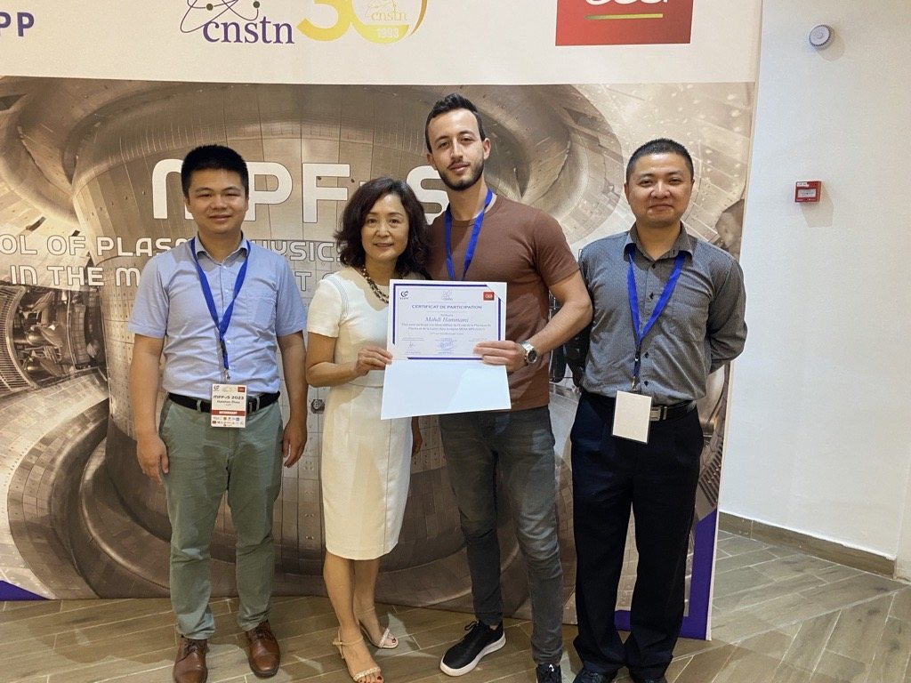

IEEE AICCONF 2026ICED 2025ICED 2026EDRS 2026ICMLA ReviewerSafranCNRS Sfax · DLRMPFuS 2023 · CNSTNUniversity of LouisvilleFully Funded M.S. & Ph.D.IEEE AICCONF 2026ICED 2025ICED 2026EDRS 2026ICMLA ReviewerSafranCNRS Sfax · DLRMPFuS 2023 · CNSTNUniversity of LouisvilleFully Funded M.S. & Ph.D.
Mission
I build AI that people in medicine and finance can trust — accurate, efficient, and honestly evaluated.
Fully funded M.S. & Ph.D. · Multimedia Research Lab, UofL
Research
Three ways I read time.
01
Deep Learning for Time-Series Classification
Multivariate signals are long, noisy, and messy. I model them in both the time and frequency domains — and as graphs — designing architectures from LSTMs and convolutional blocks to attention-based fusion and graph-based models that classify them reliably, with top results on public benchmarks.
Time domain
Frequency domain
Graph models
LSTM · CNN
Attention fusion
02
AI & Agentic Systems for Health
From wearable physiological signals to emotion states and eating-disorder research, I build models with clinicians and neuroscientists in the loop — and explore agentic AI that can support health researchers end-to-end.
Wearables
Personalization
Clinical collaboration
Agentic AI
03
AI in Finance
I stress-test AI against classic methods on real markets — portfolio optimization, foundation models, and LLM sentiment — with transaction costs, walk-forward splits, and statistical significance built in.
Portfolio optimization
Foundation models
LLMs
Backtesting
Story
From Sfax to Louisville.
A path built on curiosity, hard work, and great collaborators. Fluent in English & French, native Arabic.
2019 – 2021 · Sfax Preparatory Engineering Institute
Ranked 3rd of 1,200+
Two intensive years of preparatory engineering studies — advanced mathematics, linear algebra, probability & statistics, algorithms and numerical methods. Ranked 3 / 1,200+ in the national entrance exam.
2021 – 2024 · Tunis
Tunisia Polytechnic School
Admitted in the top 1% nationwide, on scholarship, to the country's most selective engineering school, in a program accredited by ABET, the U.S. engineering accreditation board.
2023 · CNRS — Sfax, Tunisia
Seeing in 3D
Data Engineer Intern at the Digital Research Centre of Sfax (CNRS), in collaboration with the German Aerospace Center (DLR). Simulated satellite data and built deep learning models to improve 3D point-cloud reconstruction from 2D imagery.
2023 · CNSTN, Tunisia
Where physics met AI
Selected for the MENA Plasma and Fusion Physics School (MPFuS 2023), a one-week intensive school hosted by Tunisia's National Center for Nuclear Sciences and Technologies (CNSTN) with nuclear research partners from France, China and Switzerland. We ran hands-on plasma experiments, then trained models on our own measurements to predict material phases for experiments we had not run — the first time I brought physics, chemistry, mathematics and AI together.

MPFuS 2023 · Certificate of participation · CNSTN
2023 · Tunisia Digital Summit
A national trophy, with Safran
With three engineers from Safran, built an AI and optimization model to integrate electric vehicles in Tunisia — awarded by the Tunisian Minister of Technology.
National trophy · Tunisia Digital Summit
2024 · Louisville, KY
A new continent, a fully funded M.S.
M.S. in Computer Science & Engineering (GPA 3.91). Joined the Multimedia Research Lab to predict emotion states from physiological signals, side by side with neuroscience researchers.
2025 · University of Louisville
First Prize — Best Research Project
Best Research Project among Master's students in the Department of Computer Science. Presented the work at ICED 2025 in San Antonio, TX.
Best Research Project · UofL CS · 2025
2026 · Now
Ph.D. & Teaching
Fully funded Ph.D. in Computer Science (GPA 3.95) and Graduate Teaching Assistant since August 2026. First-author IEEE paper; talks at ICED 2026, EDRS 2026 and AICCONF 2026; ICMLA program committee reviewer.
Teaching & Service
Giving back to the community.
Teaching · Since Aug 2026
140
Graduate Teaching Assistant
Supporting 140 students at the University of Louisville through labs, office hours, and grading — helping them debug both code and ideas.
Peer Review
2×
ICMLA Program Committee
Reviewer for the International Conference on Machine Learning and Applications, 2025 & 2026.
Prediction of Feelings in Individuals with Eating Disorders Using Physiological Signals
M. Hammami, H. Frigui, A. Karem, C. Ralph-Nearman
4th Cognitive Models and Artificial Intelligence Conference (AICCONF) · DOI 10.1109/AICCONF69182.2026.11600712
A 30-day longitudinal study with Empatica E4 wearables — 67+ hours, 7 physiological signals — predicting anxiety, tiredness, and fear of weight gain in individuals with atypical anorexia nervosa. A multisampling augmentation and an optimized LSTM cut error by 29%; participant-specific fine-tuning brought the weighted global MAE to 0.0989 — a step toward real-time, personalized monitoring.
HR · EDA · BVP · TEMP · ACC x/y/z→ Anxiety · Tiredness · Fear of weight gain
Finance · Benchmarking
Classic vs AI Portfolios on the S&P 500
A reproducible walk-forward benchmark that pits classic portfolio theory, genetic algorithms, end-to-end deep learning (attention-LSTM + Transformer) and the Chronos-2 foundation model (zero-shot & LoRA) against the market — after transaction costs. Best test Sharpe: GA 0.82 vs SPY 0.64, and an honest finding: across 35 configurations, no edge is statistically significant.
Parameter-efficient LoRA / QLoRA fine-tuning of Qwen2.5 (0.5B & 1.5B), training only 0.28% of the parameters. Macro-F1 rose from 0.58 to 0.88 in-domain, with gains carrying over to unseen financial news. The sentiment signal was then evaluated in a rigorous, look-ahead-free backtest on 104k tweets across 87 stocks.
Time- and frequency-domain representations plus graph-based models, combined with LSTM, convolutional blocks and attention-based fusion — top results on public benchmarks.
Optimization
Genetic Algorithm Portfolios
Optimal allocations across S&P 500 companies from 5 years of daily data, under realistic constraints.
ML Competition
Loan Default Prediction
Feature engineering and XGBoost / LightGBM ensembles — top 7% of 1,000 participants on Zindi.
Computer Vision
RGB & Infrared Recognition
Fine-tuned VGG and autoencoder architectures for object recognition across RGB and infrared imagery.
Contact
Let's build something trustworthy.
Open to research collaborations, internships, and conversations about time-series, health AI, and finance.